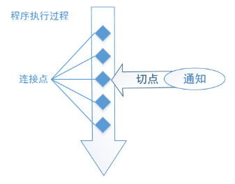

简单引入AOP的概念和使用方式。
AOP概念
相关术语
Joinpoint(连接点)
所谓连接点是指那些被拦截到的点。在 spring 中,这些点指的是方法,因为 spring 只支持方法类型的连接点。上文中的service层都是连接点，连接点就是连接动态代理和原始执行的原始的那些所有点。
Pointcut(切入点)
所谓切入点是指我们要对哪些 Joinpoint 进行拦截的定义。只有连接点被动态代理增强后，才是切入点。
Advice(通知/增强)
所谓通知是指拦截到 Joinpoint 之后所要做的事情就是通知。就是被放入到动态代理中的操作。就是要增强的方法，都叫他做Advice
通知的类型:前置通知,后置通知,异常通知,最终通知,环绕通知。
Introduction(引介)
引介是一种特殊的通知在不修改类代码的前提下, Introduction 可以在运行期为类动态地添加一些方法或 Field。
Target(目标对象)
代理的目标对象。
Weaving(织入)
是指把增强应用到目标对象来创建新的代理对象的过程。spring 采用动态代理织入,而 AspectJ 采用编译期织入和类装载期织入。
Proxy(代理)
一个类被 AOP 织入增强后,就产生一个结果代理类。
Aspect(切面)
是切入点和通知(引介)的结合。
AOP的术语整理

1） 切面（Aspect）
切面是通知和切点的结合。通知和切点共同定义了切面的全部内容——它是什么，在何时和何处完成其功能。比如事务管理是一个切面，权限管理也是一个切面。
2） 通知（Advice）
通知定义了切面是什么以及何时使用。除了描述切面要完成的工作，通知还解决了何时执行这个工作的问题。
Spring切面可以应用5种类型的通知：
前置通知（Before）：在目标方法被调用之前调用通知功能
后置通知（After）：在目标方法完成之后调用通知，不关心方法的输出是什么。是“返回通知”和“异常通知”的并集。
返回通知（After-returning）：在目标方法成功执行之后调用通知
异常通知（After-throwing）：在目标方法抛出异常后调用通知
环绕通知（Around）通知包裹了被通知的方法，可同时定义前置通知和后置通知。
3） 切点（Pointcut）
切点定义了在何处工作，也就是真正被切入的地方，也就是在哪个方法应用通知。切点的定义会匹配通知所有要织入的一个或多个连接点。我们通常使用明确的类和方法名称，或是利用正则表达式定义所匹配的类和方法名称来指定这些切点。
4）连接点（Join point）
连接点是在应用执行过程中能够插入切面的一个点。这个点可以是调用方法时，抛出异常时，甚至修改一个字段时。切面代码可以利用这些点插入到应用的正常流程之中，并添加新的行为。
5） 引入（Introduction）
引入让一个切面可以声明被通知的对象实现了任何他们没有真正实现的额外接口，而且为这些对象提供接口的实现。
引入允许我们向现有的类添加新方法或属性。这个新方法和实例变量就可以被引入到现有的类中，从而可以再无需修改这些现有的类的情况下，让它们具有新的行为和状态。
5） 织入（Weaving）：织入是把切面应用到目标对象并创建新的代理对象的过程。切面在指定的连接点被织入到目标对象中。在目标对象的生命周期里有多个点可以织入。
- 编译器：切面在目标类编译时被织入。这种方式需要特殊的编译器。
- 类加载期：切面在目标类被引入应用之前增强该目标类的字节码。
- 运行期：切面在应用运行的某个时刻被织入。
AOP的角色
开发阶段(我们做的)
编写核心业务代码(开发主线):大部分程序员来做,要求熟悉业务需求。
把公用代码抽取出来,制作成通知。(开发阶段最后再做):AOP 编程人员来做。
在配置文件中,声明切入点与通知间的关系,即切面。:AOP 编程人员来做。
运行阶段(Spring 框架完成的)
Spring 框架监控切入点方法的执行。一旦监控到切入点方法被运行,使用代理机制,动态创建目标对象的代理对象,根据通知类别,在代理对象的对应位置,将通知对应的功能织入,完成完整的代码逻辑运行。
基于XML的AOP配置
切入点配置
- 关键字：execution(表达式)
- 表达式：
- 访问修饰符 返回值 包名.包名.包名…类名.方法名(参数列表)
- 标准的表达式写法：
public void uestc.zhangkx.service.impl.AccountServiceImpl.saveAccount()
- 细节：
- 访问修饰符可以省略
void uestc.zhangkx.service.impl.AccountServiceImpl.saveAccount() - 返回值可以使用通配符，表示任意返回值
* uestc.zhangkx.service.impl.AccountServiceImpl.saveAccount() - 包名可以使用通配符，表示任意包。但是有几级包，就需要写几个.
` ....AccountServiceImpl.saveAccount())` - 包名可以使用..表示当前包及其子包
* *..AccountServiceImpl.saveAccount() - 类名和方法名都可以使用来实现通配
` ...*()`
- 访问修饰符可以省略
- 参数列表
- 可以直接写数据类型：
- 基本类型直接写名称—— int
- 引用类型写包名.类名的方式——
java.lang.String
- 可以使用通配符表示任意类型，但是必须有参数
- 可以使用..表示有无参数均可，有参数可以是任意类型
- 可以直接写数据类型：
- 全通配写法：
* *..*.*(..) - 实际开发中切入点表达式的通常写法：
- 切到业务层实现类下的所有方法
* uestc.zhangkx.service.impl.*.*(..)
- 切到业务层实现类下的所有方法
Aop标签
aop:config
作用:
- 用于声明开始 aop 的配置
使用：
<aop:config> <!-- 配置的代码都写在此处 --> </aop:config>aop:aspect
作用：
- 用于配置切面
属性:
- id:给切面提供一个唯一标识。
- ref:引用配置好的通知类 bean 的 id。
使用：
<aop:aspect id="txAdvice" ref="txManager"> <!--配置通知的类型要写在此处--> </aop:aspect>
aop:pointcut
作用：
- 用于配置切入点表达式。就是指定对哪些类的哪些方法进行增强。
属性：
- expression:用于定义切入点表达式。
- id:用于给切入点表达式提供一个唯一标识
使用：
<aop:pointcut expression="execution( public void uestc.zhangkx.service.impl.AccountServiceImpl.transfer( java.lang.String, java.lang.String, java.lang.Float) )" id="pt1"/>
aop:xxx
- 作用：
- advice配置，详见如下
Advice配置
aop:before
作用:
- 用于配置前置通知。指定增强的方法在切入点方法之前执行
属性:
- method:用于指定通知类中的增强方法名称
- ponitcut-ref:用于指定切入点的表达式的引用
- poinitcut:用于指定切入点表达式
执行时间点:
- 切入点方法执行之前执行
使用：
<aop:before method="beginTransaction" pointcut-ref="pt1"/>
aop:after-returning
作用:
- 用于配置后置通知
属性:
- method:指定通知中方法的名称。
- pointcut:定义切入点表达式
- pointcut-ref:指定切入点表达式的引用
执行时间点:
- 切入点方法正常执行之后。它和异常通知只能有一个执行
使用：
<aop:after-returning method="commit" pointcut-ref="pt1"/>
aop:after-throwing
作用:
- 用于配置异常通知
属性:
- method:指定通知中方法的名称。
- ponitcut-ref:用于指定切入点的表达式的引用
- poinitcut:用于指定切入点表达式
执行时间点:
- 切入点方法执行产生异常后执行。它和后置通知只能执行一个
使用：
<aop:after-throwing method="rollback" pointcut-ref="pt1"/>
aop:after
作用:
- 用于配置最终通知
属性:
- method:用于指定通知类中的增强方法名称
- ponitcut-ref:用于指定切入点的表达式的引用
- poinitcut:用于指定切入点表达式
执行时间点:
- 无论切入点方法执行时是否有异常,它都会在其后面执行。
使用：
<aop:after method="release" pointcut-ref="pt1"/>
aop:around
作用:
- 用于配置环绕通知
属性:
- method:指定通知中方法的名称。
- pointct:定义切入点表达式
- pointcut-ref:指定切入点表达式的引用
说明:
- 它是 spring 框架为我们提供的一种可以在代码中手动控制增强代码什么时候执行的方式。
注意:
- 通常情况下,环绕通知都是独立使用的
使用：
在xml中
<aop:config> <aop:pointcut expression="execution(* uestc.zhangkx.service.impl.*.*(..))" id="pt1"/> <aop:aspect id="txAdvice" ref="txManager"> <!-- 配置环绕通知 --> <aop:around method="transactionAround" pointcut-ref="pt1"/> </aop:aspect> </aop:config>在java中
/** * 环绕通知 * @param pjp * spring 框架为我们提供了一个接口:ProceedingJoinPoint,它可以作为环绕通知的方法参数。 * 在环绕通知执行时,spring 框架会为我们提供该接口的实现类对象,我们直接使用就行。 * @return */ public Object transactionAround(ProceedingJoinPoint pjp) { //定义返回值 Object rtValue = null; try { //获取方法执行所需的参数 Object[] args = pjp.getArgs(); //前置通知:开启事务 beginTransaction(); //执行方法 rtValue = pjp.proceed(args); //后置通知:提交事务 commit(); }catch(Throwable e) { //异常通知:回滚事务 rollback(); e.printStackTrace(); }finally { //最终通知:释放资源 release(); } return rtValue; }
配置步骤
utils.Logger中：
package uestc.zhangkx.utils;
import org.aspectj.lang.ProceedingJoinPoint;
/**
* 用于记录日志的工具类，它里面提供了公共的代码
*/
public class Logger {
/**
* 前置通知
*/
public void beforePrintLog(){
System.out.println("前置通知Logger类中的beforePrintLog方法开始记录日志了。。。");
}
/**
* 后置通知
*/
public void afterReturningPrintLog(){
System.out.println("后置通知Logger类中的afterReturningPrintLog方法开始记录日志了。。。");
}
/**
* 异常通知
*/
public void afterThrowingPrintLog(){
System.out.println("异常通知Logger类中的afterThrowingPrintLog方法开始记录日志了。。。");
}
/**
* 最终通知
*/
public void afterPrintLog(){
System.out.println("最终通知Logger类中的afterPrintLog方法开始记录日志了。。。");
}
/**
* 环绕通知
* 问题：
* 当我们配置了环绕通知之后，切入点方法没有执行，而通知方法执行了。
* 分析：
* 通过对比动态代理中的环绕通知代码，发现动态代理的环绕通知有明确的切入点方法调用，而我们的代码中没有。
* 解决：
* Spring框架为我们提供了一个接口：ProceedingJoinPoint。该接口有一个方法proceed()，此方法就相当于明确调用切入点方法。
* 该接口可以作为环绕通知的方法参数，在程序执行时，spring框架会为我们提供该接口的实现类供我们使用。
*
* spring中的环绕通知：
* 它是spring框架为我们提供的一种可以在代码中手动控制增强方法何时执行的方式。
*/
public Object aroundPrintLog(ProceedingJoinPoint pjp){
Object rtValue = null;
try{
Object[] args = pjp.getArgs();//得到方法执行所需的参数
System.out.println("Logger类中的aroundPringLog方法开始记录日志了。。。前置");
rtValue = pjp.proceed(args);//明确调用业务层方法（切入点方法）
System.out.println("Logger类中的aroundPringLog方法开始记录日志了。。。后置");
return rtValue;
}catch (Throwable t){
System.out.println("Logger类中的aroundPringLog方法开始记录日志了。。。异常");
throw new RuntimeException(t);
}finally {
System.out.println("Logger类中的aroundPringLog方法开始记录日志了。。。最终");
}
}
}service中的切点
package uestc.zhangkx.service.impl;
import org.springframework.stereotype.Service;
import uestc.zhangkx.service.IAccountService;
/**
* 账户的业务层实现类
*/
@Service("accountService")
public class AccountServiceImpl implements IAccountService{
@Override
public void saveAccount() {
System.out.println("执行了保存");
}
@Override
public void updateAccount(int i) {
System.out.println("执行了更新"+i);
}
@Override
public int deleteAccount() {
System.out.println("执行了删除");
return 0;
}
}
配置xml
<?xml version="1.0" encoding="UTF-8"?>
<beans xmlns="http://www.springframework.org/schema/beans"
xmlns:xsi="http://www.w3.org/2001/XMLSchema-instance"
xmlns:aop="http://www.springframework.org/schema/aop"
xsi:schemaLocation="http://www.springframework.org/schema/beans
http://www.springframework.org/schema/beans/spring-beans.xsd
http://www.springframework.org/schema/aop
http://www.springframework.org/schema/aop/spring-aop.xsd">
<bean id="accountService" class="uestc.zhangkx.service.impl.AccountServiceImpl"/>
<bean id="logger" class="uestc.zhangkx.utils.Logger"/>
<aop:config>
<aop:aspect id="logAdvice" ref="logger" >
<aop:pointcut id="pt1" expression="execution(* uestc.zhangkx.service.impl.*.*(..))"/>
<!--配置前置通知：在切入点方法执行之前执行-->
<aop:before method="beforePrintLog" pointcut-ref="pt1" />
<!--配置后置通知：在切入点方法正常执行之后值。它和异常通知永远只能执行一个-->
<aop:after-returning method="afterReturningPrintLog" pointcut-ref="pt1" />
<!--配置异常通知：在切入点方法执行产生异常之后执行。它和后置通知永远只能执行一个-->
<aop:after-throwing method="afterThrowingPrintLog" pointcut-ref="pt1" />
<!--配置最终通知：无论切入点方法是否正常执行它都会在其后面执行-->
<aop:after method="afterPrintLog" pointcut-ref="pt1" />
<!-- 配置环绕通知 详细的注释请看Logger类中-->
<aop:around method="aroundPrintLog" pointcut-ref="pt1"/>
</aop:aspect>
</aop:config>
</beans>test类：
package uestc.zhangkx.test;
import org.springframework.context.ApplicationContext;
import org.springframework.context.support.ClassPathXmlApplicationContext;
import uestc.zhangkx.service.IAccountService;
public class AOPTest {
public static void main(String[] args) {
ApplicationContext ac = new ClassPathXmlApplicationContext("spring.xml");
IAccountService as = (IAccountService)ac.getBean("accountService");
as.saveAccount();
}
}基于anno的AOP配置
package uestc.zhangkx.service.impl;
import org.springframework.stereotype.Service;
import uestc.zhangkx.service.IAccountService;
/**
* 账户的业务层实现类
*/
@Service("accountService")
public class AccountServiceImpl implements IAccountService{
@Override
public void saveAccount() {
System.out.println("执行了保存");
}
@Override
public void updateAccount(int i) {
System.out.println("执行了更新"+i);
}
@Override
public int deleteAccount() {
System.out.println("执行了删除");
return 0;
}
}package uestc.zhangkx.service;
/**
* 账户的业务层接口
*/
public interface IAccountService {
/**
* 模拟保存账户
*/
void saveAccount();
/**
* 模拟更新账户
* @param i
*/
void updateAccount(int i);
/**
* 删除账户
* @return
*/
int deleteAccount();
}package uestc.zhangkx.utils;
import org.aspectj.lang.ProceedingJoinPoint;
import org.aspectj.lang.annotation.*;
import org.springframework.stereotype.Component;
/**
* 用于记录日志的工具类，它里面提供了公共的代码
*/
@Component("logger")
@Aspect//表示当前类是一个切面类
public class Logger {
@Pointcut("execution(* uestc.zhangkx.service.impl.*.*(..))")
private void pt1(){}
/**
* 前置通知
*/
// @Before("pt1()")
public void beforePrintLog(){
System.out.println("前置通知Logger类中的beforePrintLog方法开始记录日志了。。。");
}
/**
* 后置通知
*/
// @AfterReturning("pt1()")
public void afterReturningPrintLog(){
System.out.println("后置通知Logger类中的afterReturningPrintLog方法开始记录日志了。。。");
}
/**
* 异常通知
*/
// @AfterThrowing("pt1()")
public void afterThrowingPrintLog(){
System.out.println("异常通知Logger类中的afterThrowingPrintLog方法开始记录日志了。。。");
}
/**
* 最终通知
*/
// @After("pt1()")
public void afterPrintLog(){
System.out.println("最终通知Logger类中的afterPrintLog方法开始记录日志了。。。");
}
/**
* 环绕通知
* 问题：
* 当我们配置了环绕通知之后，切入点方法没有执行，而通知方法执行了。
* 分析：
* 通过对比动态代理中的环绕通知代码，发现动态代理的环绕通知有明确的切入点方法调用，而我们的代码中没有。
* 解决：
* Spring框架为我们提供了一个接口：ProceedingJoinPoint。该接口有一个方法proceed()，此方法就相当于明确调用切入点方法。
* 该接口可以作为环绕通知的方法参数，在程序执行时，spring框架会为我们提供该接口的实现类供我们使用。
*
* spring中的环绕通知：
* 它是spring框架为我们提供的一种可以在代码中手动控制增强方法何时执行的方式。
*/
@Around("pt1()")
public Object aroundPringLog(ProceedingJoinPoint pjp){
Object rtValue = null;
try{
Object[] args = pjp.getArgs();//得到方法执行所需的参数
System.out.println("Logger类中的aroundPringLog方法开始记录日志了。。。前置");
rtValue = pjp.proceed(args);//明确调用业务层方法（切入点方法）
System.out.println("Logger类中的aroundPringLog方法开始记录日志了。。。后置");
return rtValue;
}catch (Throwable t){
System.out.println("Logger类中的aroundPringLog方法开始记录日志了。。。异常");
throw new RuntimeException(t);
}finally {
System.out.println("Logger类中的aroundPringLog方法开始记录日志了。。。最终");
}
}
}<?xml version="1.0" encoding="UTF-8"?>
<beans xmlns="http://www.springframework.org/schema/beans"
xmlns:xsi="http://www.w3.org/2001/XMLSchema-instance"
xmlns:aop="http://www.springframework.org/schema/aop"
xmlns:context="http://www.springframework.org/schema/context"
xsi:schemaLocation="http://www.springframework.org/schema/beans
http://www.springframework.org/schema/beans/spring-beans.xsd
http://www.springframework.org/schema/aop
http://www.springframework.org/schema/aop/spring-aop.xsd
http://www.springframework.org/schema/context
http://www.springframework.org/schema/context/spring-context.xsd">
<!-- 配置spring创建容器时要扫描的包-->
<context:component-scan base-package="uestc.zhangkx"/>
<!-- 配置spring开启注解AOP的支持 -->
<aop:aspectj-autoproxy/>
</beans>package uestc.zhangkx.test;
import org.springframework.context.ApplicationContext;
import org.springframework.context.support.ClassPathXmlApplicationContext;
import uestc.zhangkx.service.IAccountService;
public class AOPTest {
public static void main(String[] args) {
ApplicationContext ac = new ClassPathXmlApplicationContext("spring.xml");
IAccountService as = (IAccountService)ac.getBean("accountService");
as.saveAccount();
}
}